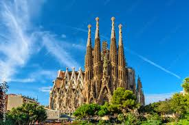
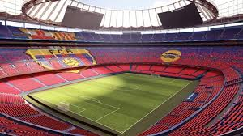

Barcelona, stolica Katalonii i drugie co do wielkości miasto Hiszpanii, to śródziemnomorska metropolia słynąca z unikalnej architektury Gaudíego (m.in. Sagrada Família), bogatej historii (Dzielnica Gotycka), piaszczystych plaż i tętniącej życiem atmosfery. Położona między morzem a górami, oferuje połączenie kultury, sztuki i sportu, będąc jednym z najpopularniejszych kierunków turystycznych w Europie.

Sagrada Família (Świątynia Pokutna Świętej Rodziny) w Barcelonie to secesyjna bazylika mniejsza, uważana za opus magnum Antoniego Gaudíego. Budowana od 1882 roku, jest ikoną architektury organicznej łączącą gotyk z formami natury. Po ukończeniu (planowanym na okolice 2026 r.) centralna wieża Jezusa Chrystusa osiągnie 172,5 m, czyniąc ją najwyższym kościołem na świecie.

Spotify Camp Nou to legendarny stadion FC Barcelony, będący największym obiektem piłkarskim w Europie i jednym z największych na świecie, mogącym pomieścić ponad 99 000 widzów. Inaugurowany w 1957 roku obiekt oferuje bogate zaplecze, w tym klubowe muzeum, sklep oraz szatnie. Obecnie stadion przechodzi modernizację (Espai Barça).